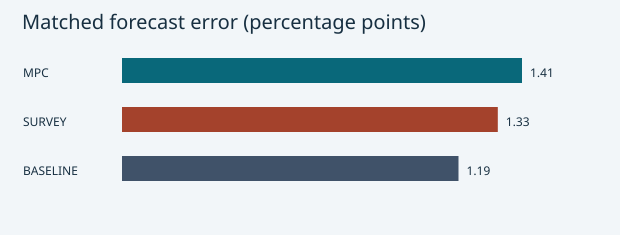

Compare dated RBI MPC and external survey forecasts on the same targets. Values are percentages.
| Date | Target | MPC | Survey | Baseline | Actual |
|---|---|---|---|---|---|
| 2025-06-06 | FY26 Q3 | 3.9 | 3.5 | 3.16 | 0.76 |
| 2025-08-06 | FY26 Q2 | 2.1 | 2.4 | 2.10 | 1.72 |
| 2025-08-06 | FY26 Q3 | 3.1 | 2.7 | 2.10 | 0.76 |
| 2025-10-01 | FY26 Q3 | 1.8 | 2.0 | 2.07 | 0.76 |
| 2025-12-05 | FY26 Q3 | 0.6 | 0.8 | 0.25 | 0.76 |
